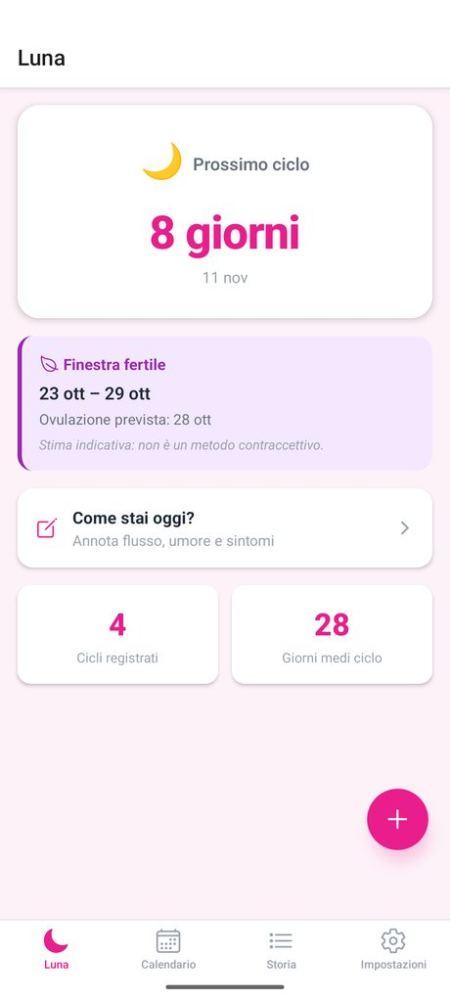
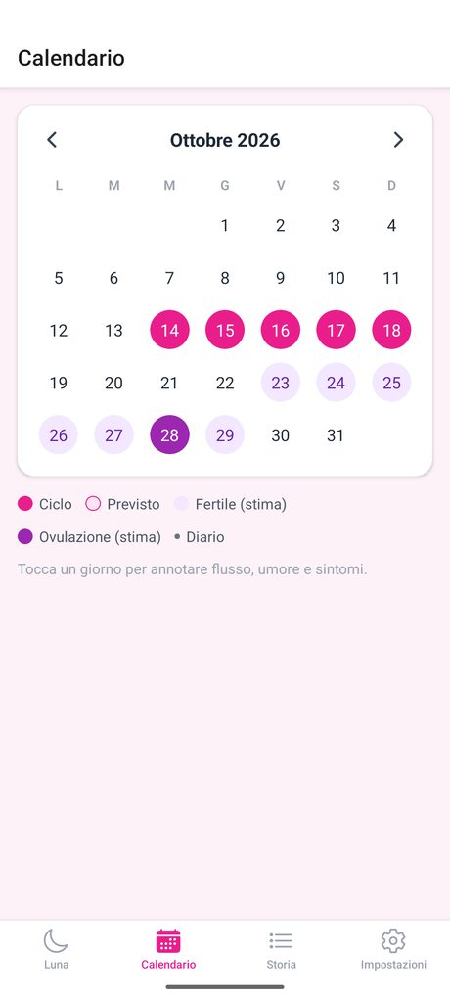
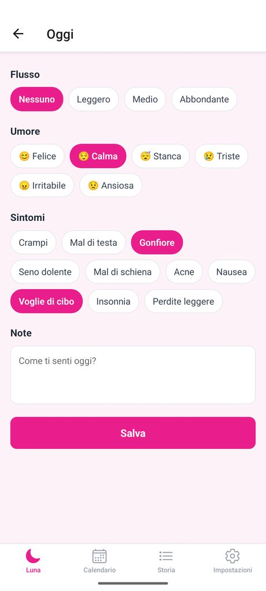

Il tuo ciclo a colpo d'occhio
Giorno del ciclo, giorni al prossimo, calendario e diario. Registri inizio e fine, Luna prevede il resto e ti avvisa 3 giorni prima.



Un diario, non un questionario
Ogni giorno annoti solo quello che vuoi. Prova a toccare le voci.
Flusso
Umore
Sintomi
Privata davvero
📱✕☁️
Blocco con PIN, anche al rientro dallo sfondo
- Nessun account e nessun cloud: i dati non lasciano il telefono.
- Backup esportabile come testo e ripristino quando vuoi.
- Funziona offline. In 6 lingue.
Le stime, inclusa la finestra fertile, sono indicative: Luna non è un metodo contraccettivo né un parere medico.